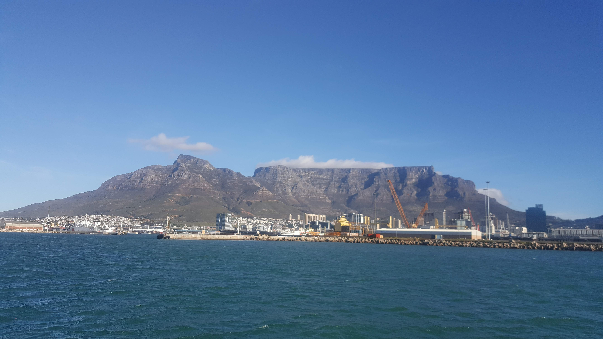
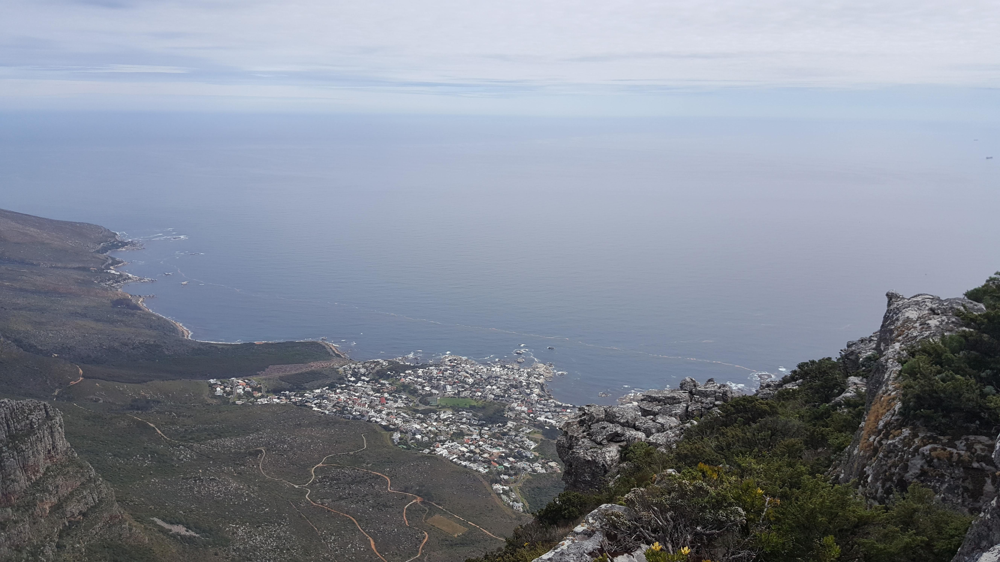
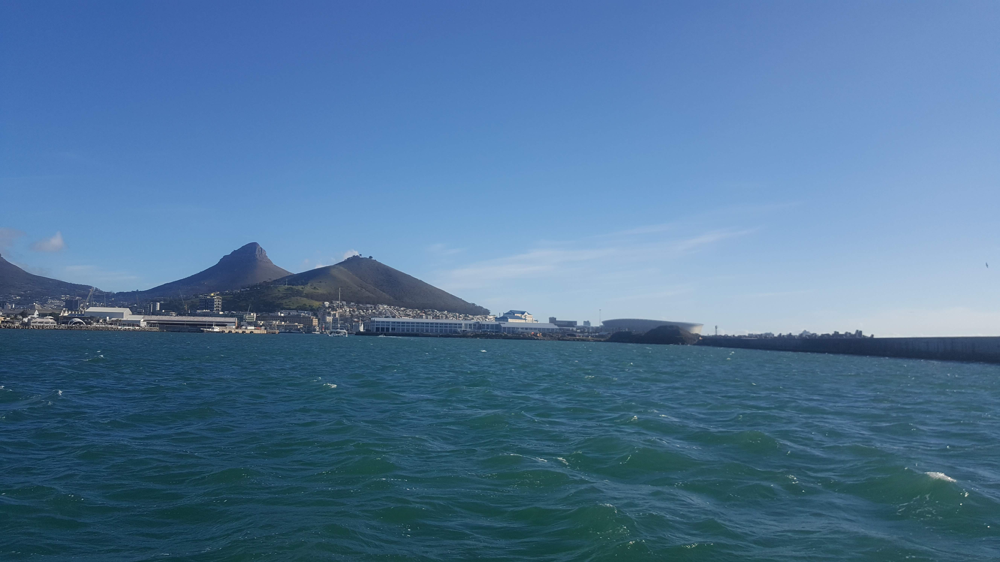
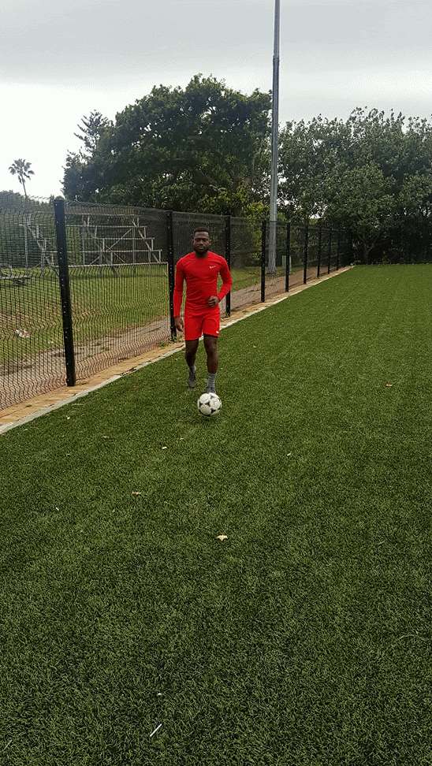

Life Beyond Work
Outside of work hours I love playing soccer and spending time on the mountain hiking and enjoying panoramic views. I have also been fortunate enough to travel extensively for work and leisure as it can be seen from some of my photo collections below on various trips (South Africa, Germany, United Kingdom, United Arab Emirates and Tanzania). For more of my photography, please feel free to reach out from any of my social profiles.
Choose love. Choose joy. Choose happiness. Choose to shine.
Be humble. Be brave. Take risks. Nothing can substitute experience.





